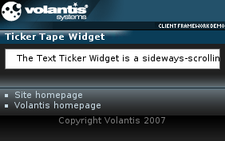

The Ticker Tape widget is a sideways-scrolling display area that may contain styled text, images and links. It displays a continuously scrolling set of content that loops around. Its purpose is to display information such as news headlines, stock prices, banner adverts, etc.
The Ticker Tape widget is able to refresh its contents periodically, at intervals that can be specified by the XDIME author, i.e. it supports the refresh action.

<widget:ticker-tape id="myWeatherTicker" class="widget">
<widget:refresh src="service/ticker?id=myWeatherTicker" interval="15"/>
<span>Ticker Tape can be configured to periodically refresh its content
by fetching data, such as weather conditions, from a web service...</span>
</widget:ticker-tape>
<widget:refresh src="service/ticker?id=myWeatherTicker" interval="15"/>
<response:response xmlns="http://www.w3.org/2002/06/xhtml2"
xmlns:mcs="http://www.volantis.com/xmlns/2006/01/xdime/mcs"
xmlns:response="http://www.volantis.com/xmlns/2006/05/widget/response">
<response:head>
<response:link rel="mcs:theme" href="/main.mthm"/>
</response:head>
<response:body>
<response:ticker-tape id="myWeatherTicker">
<span>Current weather conditions - last update 2007-02-23 12:27</span>
<span><a href="http://www.berlin.de">Berlin</a>: 25°C, partly cloudy</span>
</response:ticker-tape>
</response:body>
</response:response>
<?xml version="1.0" encoding="UTF-8"?>
<html xmlns="http://www.w3.org/2002/06/xhtml2"
xmlns:mcs="http://www.volantis.com/xmlns/2006/01/xdime/mcs"
xmlns:template="http://www.volantis.com/xmlns/marlin-template"
xmlns:widget="http://www.volantis.com/xmlns/2006/05/widget">
<head>
<title>Ticker Tape Widget with AJAX</title>
<link rel="mcs:theme" href="/themes/main.mthm"/>
<link rel="mcs:layout" href="/layouts/main.mlyt"/>
<style type="text/css" media="handheld,all">
#myWeatherTicker {
width: 99%;
}
#myWeatherTicker > span{
padding-right: 10em;
}
</style>
</head>
<body>
<template:apply href="templates/demo-main.xdtpl">
<template:binding name="title" value="Ticker Tape w/AJAX"/>
<template:binding name="content">
<template:complexValue>
<widget:ticker-tape id="myWeatherTicker" class="widget">
<widget:refresh src="service/ticker?id=myWeatherTicker" interval="15"/>
<span>Ticker Tape can be configured to periodically refresh its content
by fetching data, such as weather conditions, from a web service...</span>
</widget:ticker-tape>
</template:complexValue>
</template:binding>
</template:apply>
</body>
</html>| Name | Purpose |
|---|---|
| a | Used to create an explicit link to another place in the same document or to another document. The current document is the source of the link and the value of the href attribute, defines the link target |
| span | Inline element used to set a style. |
| response:ticker-tape | Defines the main element for a Ticker Tape widget response, enabling the widget to refresh its contents periodically. |
| widget:refresh | Allows a widget to update its contents. |
| widget:ticker-tape | Defines a Ticker Tape widget which provides a horizontal scrolling display area. |
| Core attributes | Attributes that are common to XDIME 2 elements. |
| Hypertext attributes | Attributes that define link targets. |